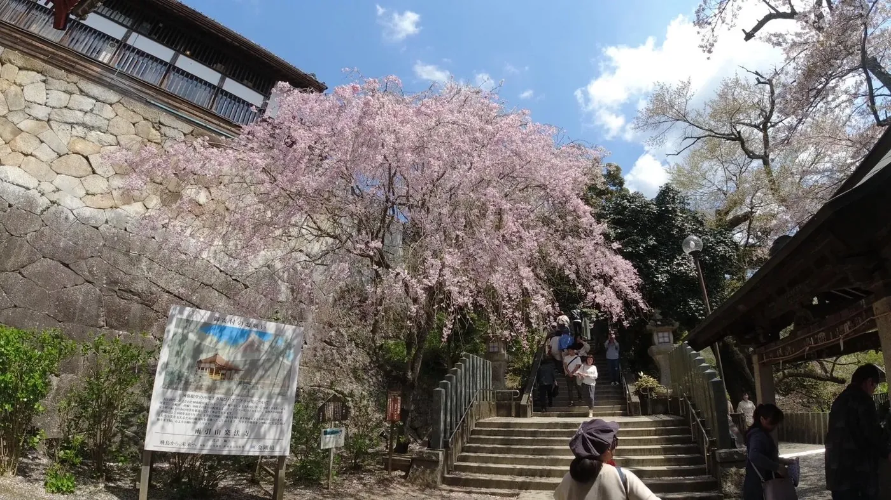
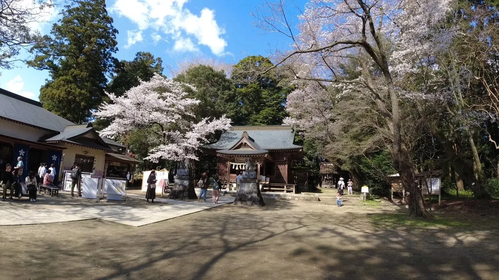
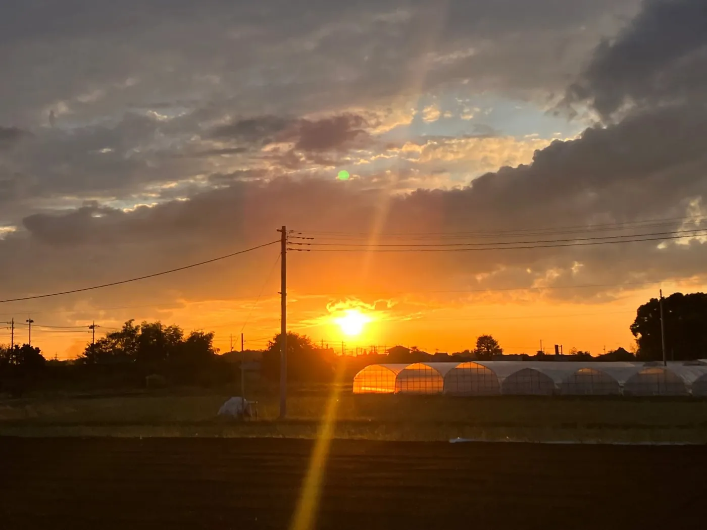
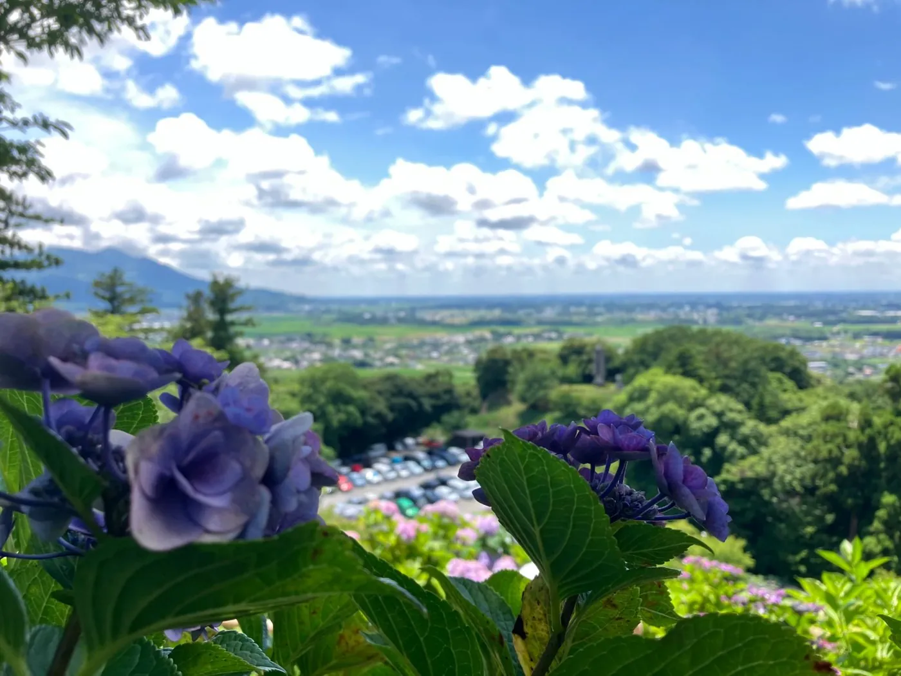

まちに人の流れをつくる
市外から訪れる人を増やし、地元のお店や観光地に足を運ぶきっかけをつくります。
WHO WE ARE
茨城県桜川市を拠点に活動する、地域を盛り上げたい有志のチームです。
メンバーは、このまちで商売や仕事をしている個人事業主・事業者・会社員など。
それぞれの得意分野や人脈を持ち寄り、桜川に人が集まり、つながるきっかけをつくります。
OUR PHILOSOPHY
イベントを開くこと自体が目的ではありません。
来てくれた人が楽しめること。まちのお店に人が訪れること。
関わるメンバー自身の仕事や挑戦にもつながること。
関わるすべての人にメリットが生まれる活動こそが、長く続き、まちを元気にすると私たちは考えています。
FOR THE TOWN
市外から訪れる人を増やし、地元のお店や観光地に足を運ぶきっかけをつくります。
外から来る人だけでなく、桜川に暮らす人が「行ってみよう」と思える企画を大切にします。
住民、移住者、事業者が出会い、新しい交流や仕事が生まれる場を広げます。
OUR STYLE
無理なく、楽しく、続けていくために。
大きく始めるより、できる規模
から一つずつ積み重ねます。
一人ひとりの得意分野を生かして、
それぞれが役割を担います。
スポーツ、食、音楽など、
桜川の魅力が伝わることなら
幅広く取り組みます。
豊かな自然と温かな空気が流れるこのまちで、
等身大の“楽しい”を形にしていきます。




ABOUT US
| チーム名 | Sakuragawa Crew |
|---|---|
| 活動拠点 | 茨城県桜川市 |
| メンバー構成 | 桜川市で仕事や商売に携わる 個人事業主、会社員などの有志 |
| 活動方針 | つくる人も、来る人も、まちも、うれしい 持続可能な地域づくり |
| 主な活動ジャンル | スポーツ、食、音楽など 幅広い地域活動・情報発信 |